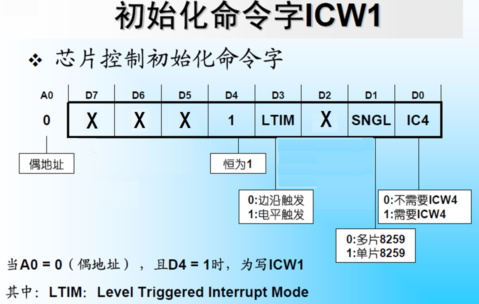

8259A
本文最后更新于：January 1, 2023 pm
8259A
8259A是专门为了对8085A和8086/8088进行中断控制而设计的芯片，它是可以用程序控制的中断控制器。
8259A的功能与结构
功能
8259A的主要功能:
- 记录8个中断源的中断请求
- 从有请求的中断源中找出高优先级的中断源，并向CPU发出中断请求
- CPU响应中断时向CPU发送中断类型号
其主要作用是控制并发的中断请求，由8259A先进行判优再代替中断源向CPU发出中断请求，以实现对中断的处理
结构

如图所示，8259A由以下几个模块构成:
- 数据总线缓冲器: 内部为三态双向8位缓冲器，接数据总线低8位D7~D0，也可通过总线驱动器与总线连接
- 读写控制逻辑: 实现对8259A的读写和端口译码
- : 读信号
- : 写信号
- : 片选信号，一般通过多级门电路进行译码，低位直接接入芯片作为端口选择信号
- : 端内部寄存器选择信号，1: 奇地址;0: 偶地址
- 级联缓冲/比较器: 当中断源多于8个时需要将8259A进行级联，主片的CAS2~CAS0做输出，从片的CAS2~CAS0做输入，从片的INT接主片的IRi
- 中断请求寄存器IRR: 共8位，分别对应IR7~IR0，当有中断请求出现时，对应位置位，中断响应后复位，允许同时多位为1
- 中断屏蔽寄存器IMR: 共8位，同样对应IR7~IR0，当置位时中断请求不会进入判优器中，复位时无影响
- 优先级判别器PR: 对未被屏蔽的中断请求寄存器中为1的请求进行优先级判断，将优先级最高的请求发出INTR信号，待收到第一个信号后将ISR对应位置位，对IRR对应位复位
- 中断服务寄存器ISR: 共8位，如果某中断被执行，对应位置位，直到中断服务完成(执行EOI操作)复位
- 控制电路: 根据信号来控制各寄存器的交互(收到第一个对IRR复位和ISR置位，收到第二个送出中断类型号)
8259A工作原理流程
flowchart TD
SRC["中断源"]
CPU["CPU"]
BUS["总线"]
subgraph "8259A"
IRR["IRR"]
IMR["IMR"]
ISR["ISR"]
PR["PR"]
Control["控制电路"]
IRR-->|"中断判优"|PR-->|"优先级最高中断"|Control
Control-->|"复位对应位"|IRR
PR<-->|"屏蔽判断"|IMR
end
SRC-->|"中断请求"|IRR
Control-->|"INTR、中断类型号"|BUS
BUS<-->CPU
BUS-->|"INTA1、INTA2、EOI"|Control
Control-->|"置位对应位"|ISR
Control-->|"复位对应位"|ISR
8259A的工作方式
在6个方面有不同工作方式可以选择:
- 中断嵌套方式:
- 普通全嵌套: 当一个中断正被处理时，只有比它优先级更高的中断请求才会被响应
- 特殊全嵌套: 允许同级中断进行嵌套，只允许主片使用
- 优先级变化方式:
- 固定方式: 各中断请求的优先级固定不变，8259A加电后IR0最高，IR7最低
- 循环方式: 一个中断源得到中断服务后，它的优先级自动降为最低
- 自动循环: 按照加电时的初始优先级顺序进行优先级循环
- 特殊循环: 改变初始优先级顺序后的循环
- 中断源屏蔽方式:
- 常规屏蔽方式: IMR置位代表屏蔽
- 特殊屏蔽方式: 使正在处理的中断所对应的IMR位置1，并使对应的ISR位清零，这样任何优先级的中断都可得到响应
- 中断结束方式:
多片级联时EOI需要两条，分别用于主片与从片- 自动结束方式: 在第二个INTA脉冲的后沿，8259A将当前处理的中断所对应的ISR位清零。当系统正在为某外设进行中断服务，但在8259A的ISR中却没有对应位指示，故该方式只能用于非嵌套方式处理
- 正常结束方式: 向8259A的偶地址端口输出一个操作命令字OCW2来发EOI命令
- 特殊结束方式: 向8259A的偶地址端口输出一个操作命令字OCW2，其中的L2、L1、L0这三位指出了对ISR中的哪一位进行清除
- 连接系统总线方式:
- 缓存方式: 在很多片8259A级联的大系统中，8259A需要通过总线驱动器和数据总线相连
- 非缓存方式: 当系统中只有单片8259A或有少量几片8259A级联时，一般将8259A直接与数据总线相连
- 中断触发方式:
- 电平触发
- 边沿触发
8259A的初始化命令字
首先需要了解如何将控制字写入8259A:
如上图所示: 通过A0与D4、D3配合进行寻址，从而实现控制字的写入。
注意: ICW2、ICW3、ICW4、OCW1地址相同，因此必须按顺序写入
ICW1

ICW2
ICW3
ICW4
8259A的初始化
如上图所示: 初始化中ICW1和ICW2必须写入进行通用性的配置，为单片时ICW3无需写入，根据ICW1内的设置来选择是否写入ICW4。
8259A的操作命令字
在8259A工作期间，可通过操作命令字(OCW)来使它按不同的方式操作，没有写入顺序和时间要求，可独立使用。
OCW1
OCW2
Hint: L2L1L0设定优先级特殊循环方式时表示最低优先级为哪个中断源，如为011时，IR3优先级最低，因此优先级排序从高到低为: IR4 > IR5 > IR6 > IR7 > IR0 > IR1 > IR2 > IR3
OCW3
本博客所有文章除特别声明外，均采用 CC BY-SA 4.0 协议 ，转载请注明出处！